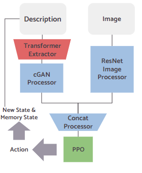
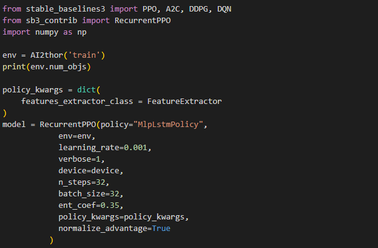
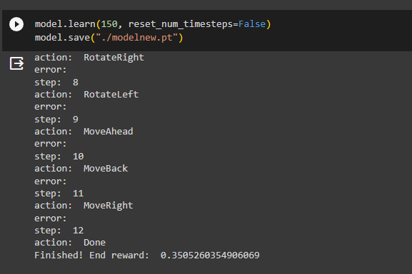
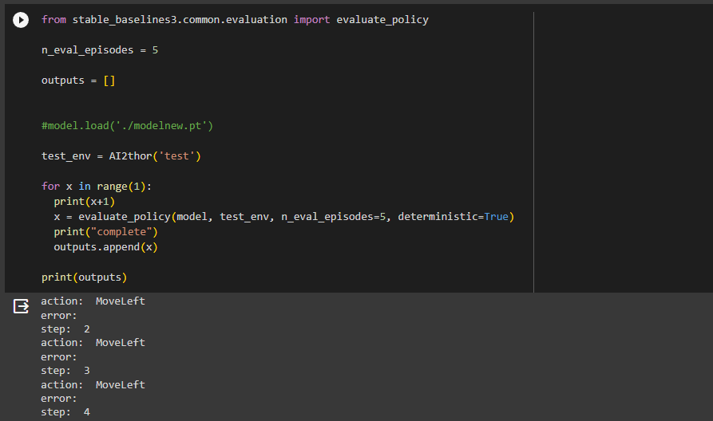

Step |
Method |
Photo |
|---|---|---|
Step 1 |
Create Feature Extractor Model using ResNet and cGAN
|
 |
Step 2 |
Create the AI2THOR Environment wrapper & Setup the PPO Model
|
 |
Step 3 |
Train the cGAN and overall PPO model
|
 |
Step 4 |
Evaluate Model on Environment
|
 |